Old Snowy
June 16, 2026
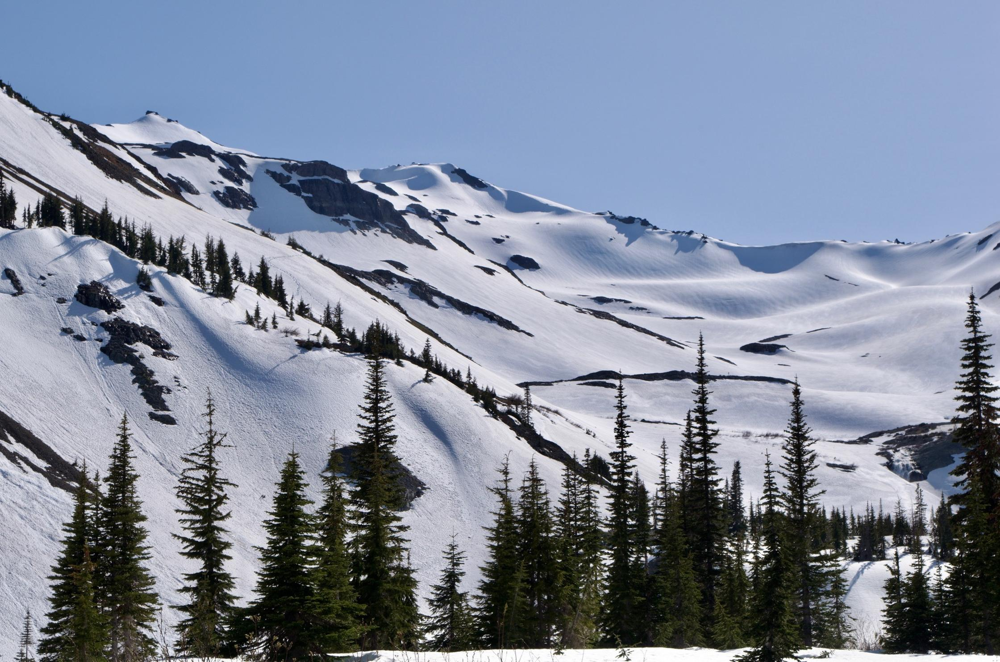
With photos by Iris Lieuw.
When I got out of the car at the trailhead, a fat and immodest mosquito landed on my face. I pressed it to death under my finger and its guts and my blood spread the first layer of weekend grime on my skin. I latched my skis to my backpack, shrugged under the shoulder straps, stood up, and noticed that it was quite heavy.
That morning, Iris, Jordan, Phillip, and I drove to Scatter Creek Trailhead in the Goat Rocks Wilderness with two manageable days on the docket: First, we'd hike 8 miles on a steady grade to McCall Basin where we'd spend the night. Then we'd wake up, find the snow, throw down our skis, and skin a couple miles to the top of Old Snowy Mountain. We'd enjoy the summit, ski back down to camp, then hoof it back to the car.
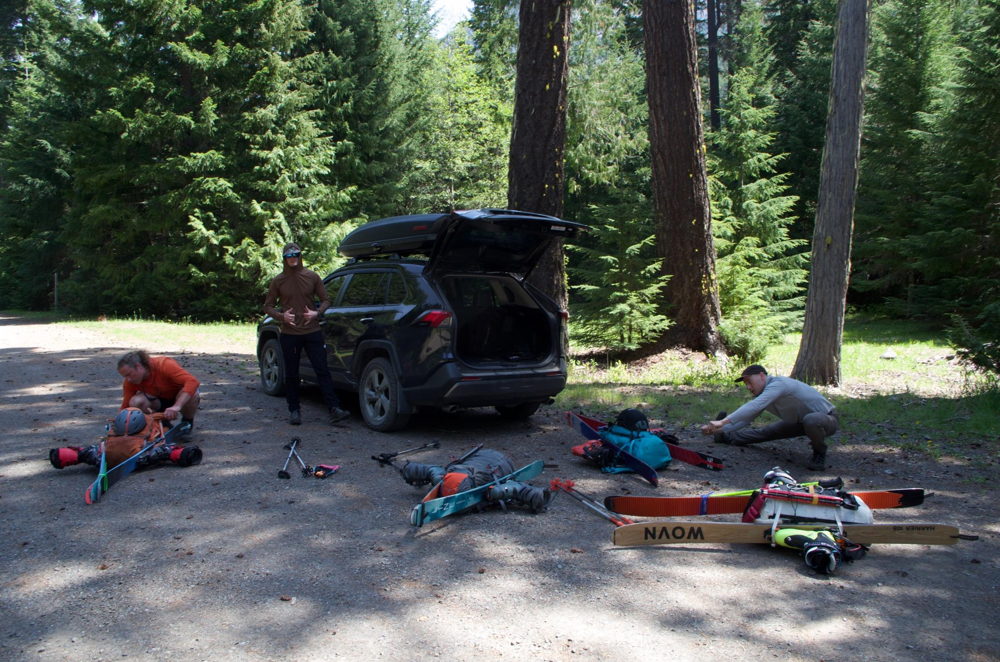
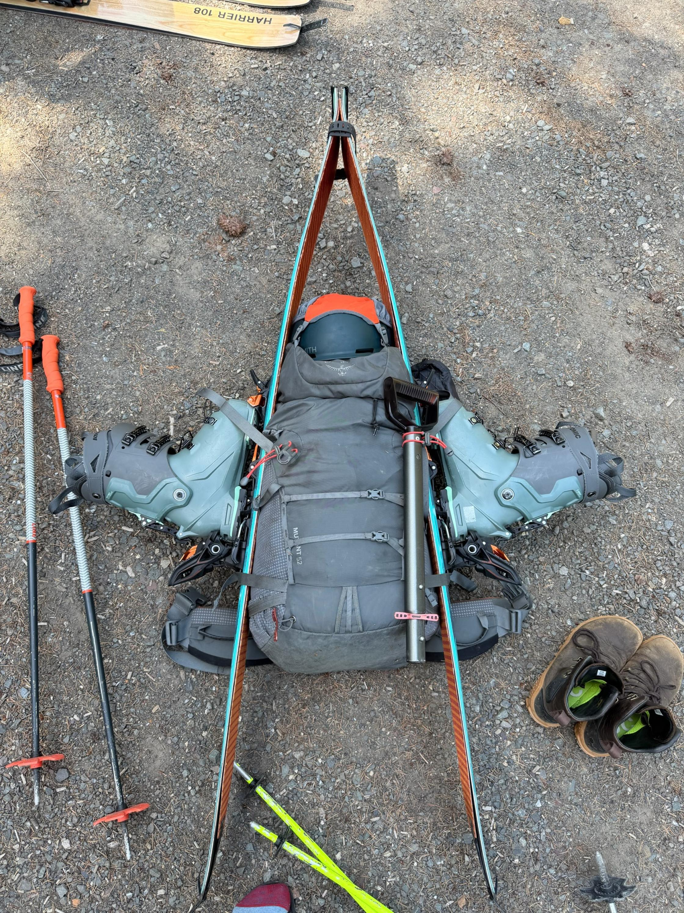
It was an intentionally casual plan. But plans always seem to discount how much work it is to hike uphill with a big pack.
As we readied for the trail, a pickup truck full of car campers looped around the lot and an old man in a bucket hat shouted from the bed.
"You headed up to McCall Basin?"
Not even a hello.
"Lots of blowdowns on that trail. It'll be slow going."
"Gotcha," we replied.
We hit the trail and got out of earshot, then laid into him.
"Lots of blowdowns ahead, everybody!" Phillip shouted.
"Slow going!" said Iris.
I mean, who likes a naysayer?
But there was more to it. Once we'd shrugged under our packs, once we turned right at the fork in the trail where he and his friends turned left, we'd become of different worlds. He and his party would sleep a dozen feet from their cars that night. They were on what we'd pejoratively call a "nature walk" - a flat, short trail to the Tieton Meadows in the valley before us.
But we were back in the world we shared away from the city, where the casual plan clicked into reality and the familiar but difficult work began. In some sense, we weren't people anymore. We were hounds, nose to the ground, tracking vert. Blood and sweat. Dirt and pain.
It'd been a while since we'd been out on a big trip and maybe we came into this one a little soft. But with each step into the woods, with the grime building, we walked further from our in-town selves. Before long, it was only the trail and the summit and us, blowdowns be damned.
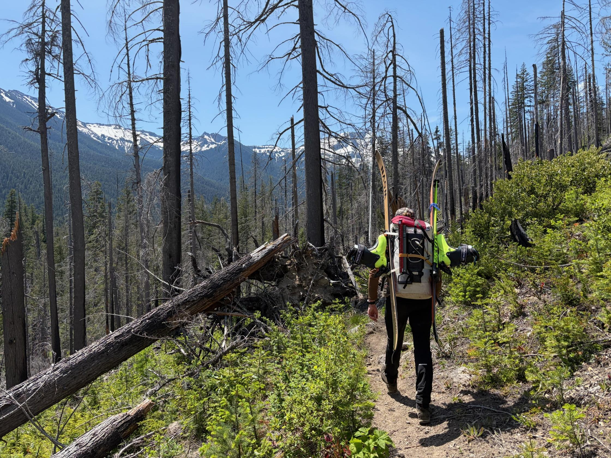
You know, if I hear another person say that it's about the journey not the destination, I'll kick their shin. I'm over the self-flagellation of it all.
But then, consider the effort to reward ratio of our casual weekend trip: some sixteen hours of hiking under a fifty pound pack. For what? When it was all said and done, we'd tally twenty minutes of downhill skiing.
On the way to McCall Basin, my pack straps dug into my shoulders, so I cinched my waist belt tight. That moved the strain to my hips. So I'd move it back after a bit.
Once, crawling under a fallen tree, my skis bumped the trunk and pushed me into the ground. My bracing hand plunged into a patch of stinging nettles. A natural insult. I spit a curse. I got back on my feet.
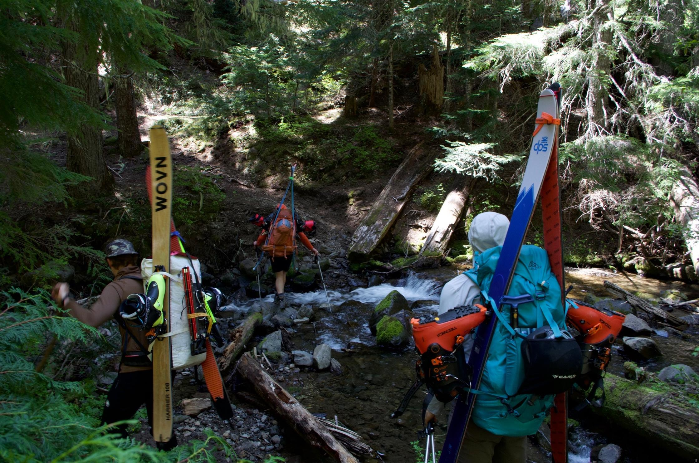
When we finally made it to McCall Basin, the trees cleared to a remarkable view. A creek cut the basin's wide plane and wound past stands of trees. To the southeast, Old Snowy crowned the valley. A thumb on the horizon atop pillowy snow slopes that rolled in a gentle staircase down to us. From the summit down to our feet - we found no sign of other people.
Is that what it was all about? The solitude, the views. Or maybe the skiing was so so good that it made the effort worthwhile.
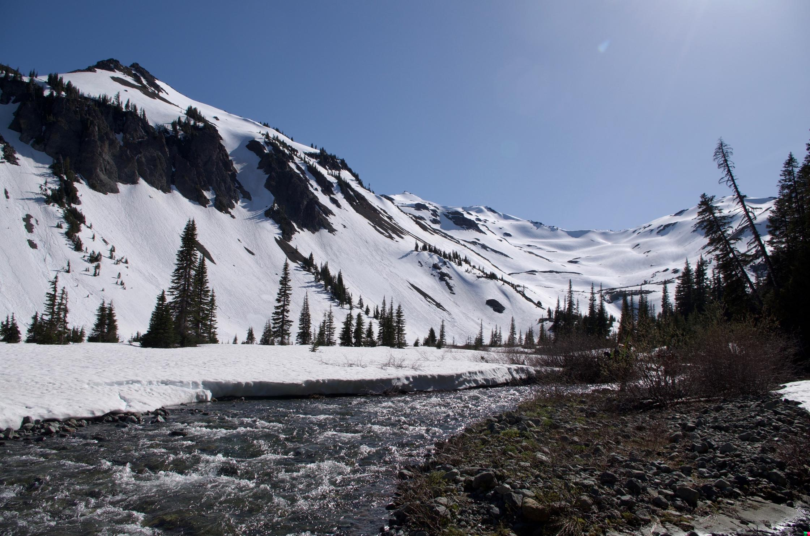
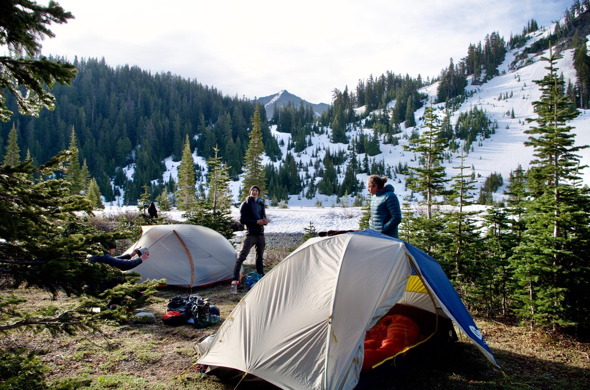
And let me tell you: it was the best skiing of my life. We fought hard all the next morning to make the summit of Old Snowy, but when we pointed tips downhill, we devoured wide and gentle slopes all the way back down to our tents. Perfect spring snow, just malleable enough to hold a hard turn.
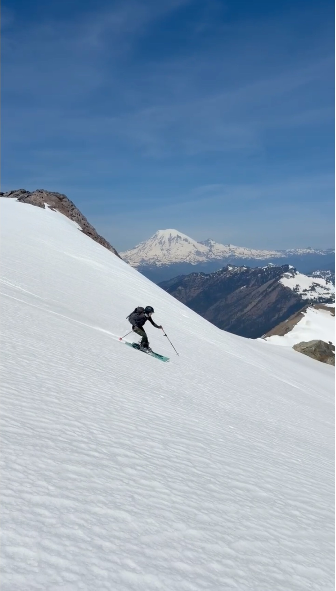
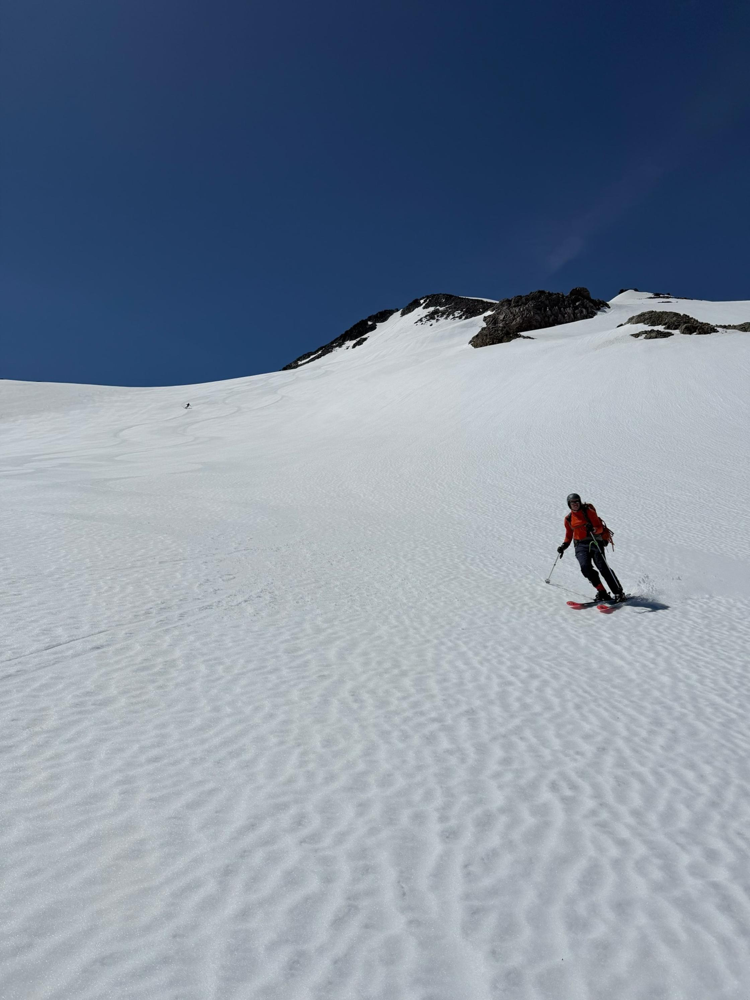
We ripped down those slopes, one at a time, watching in awe as our friends carved elegant lines for two and a half thousand vertical feet. Iris howled as she charged ahead. I rolled over a lip onto the face of a bowl and made long loping turns to govern my speed. But for brief moments, in the safety of the open terrain, I leaned forward into the gravity and flew. No fear, just exaltation. Simple fun and the thrill of being ever so slightly out of control.
But some people experience that joy with only the cost of a lift ticket. For us, the effort to reward ratio is so lopsided that there's evidently some juice we squeeze from the trip up the mountain.
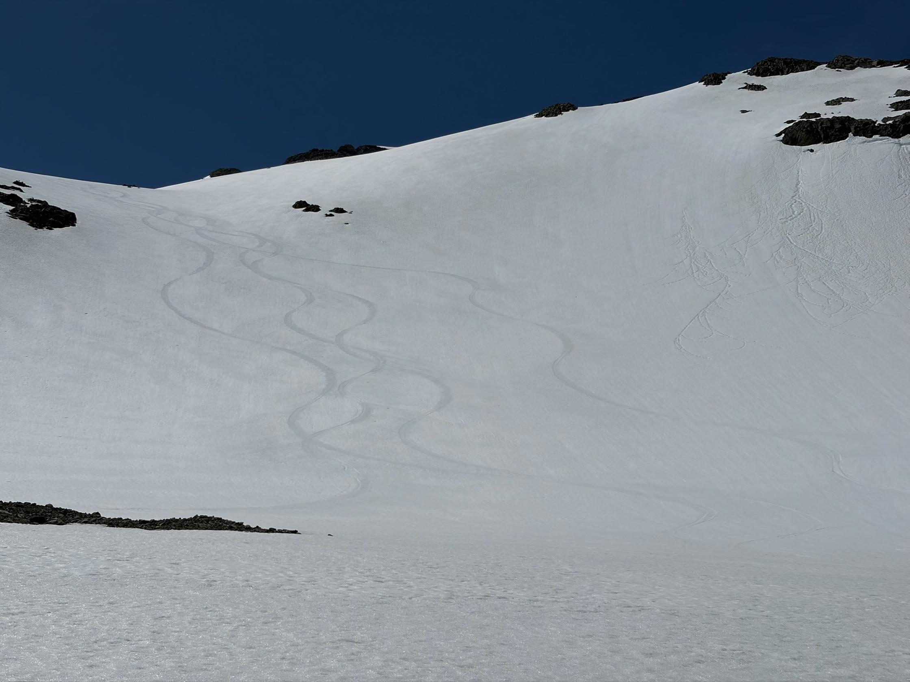
But, on the way up, a few hundred vertical feet from the summit, two thousand feet of snowy mountainside above our tents, I was having what my city-self might call a "bad time". My legs felt heavy and I was in the back of our pack. Phillip was far ahead and out of sight and I'd petered off from Jordan and Iris as they skinned a traverse that felt too steep for my comfort. Instead, I'd removed my skis, strapped them to my pack, and headed for a rock ridge that looked more mellow.
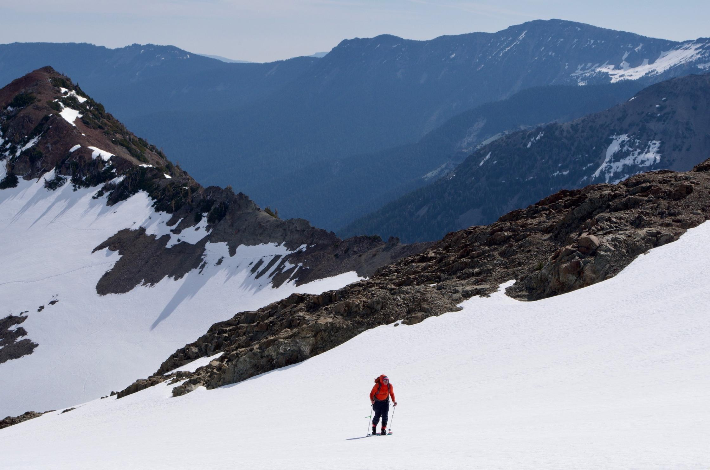
As I kicked steps up to that ridge and my friends disappeared around the mountain, the wind picked up. All of a sudden I felt quite exposed and lonely. The wind, as ever in the mountains, whispered a reminder that home was so many hours of hard labor away.
My body felt spent. I was lightheaded and a little nauseous, had been struggling to eat. I looked down to the valley floor and flat ground and wanted to turn around.
But I kept going up. I thought about how far I'd traveled to get this close to the top of Old Snowy (a mountain I hadn't heard of a week prior), about the disappointment I knew I'd feel all week if I quit too early.
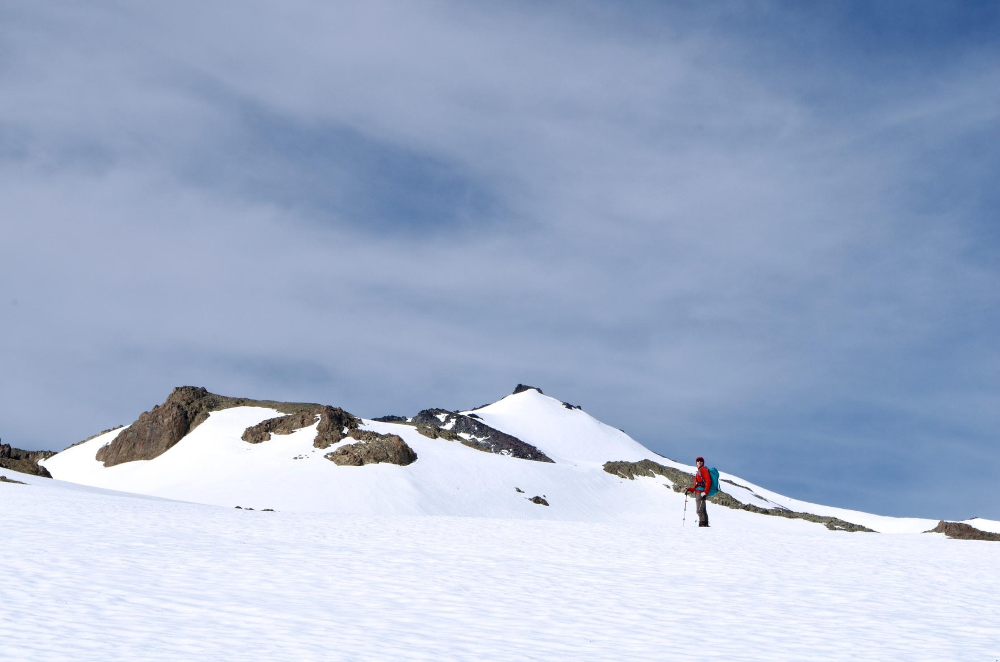
I gained the ridge and rejoined Iris and Jordan. We moved around a bulge and entered one final and steeper bowl just before the summit. There was Phillip, sitting on his butt in the middle of the face.
"I think we gotta call it," he shouted down to us. "The snow's bulletproof up here."
Iris and Jordan, still on their skis, stopped. I did too, behind them. I took a quick look up the slope. The summit ridge was a long north to south crest - our westward horizon since we'd arrived at camp last night. But on the left side of the bowl we were in, a smaller ridge met the summit perpendicular to the big ridge. I thought, if we can get on that, it'd make a nice ramp to the top.
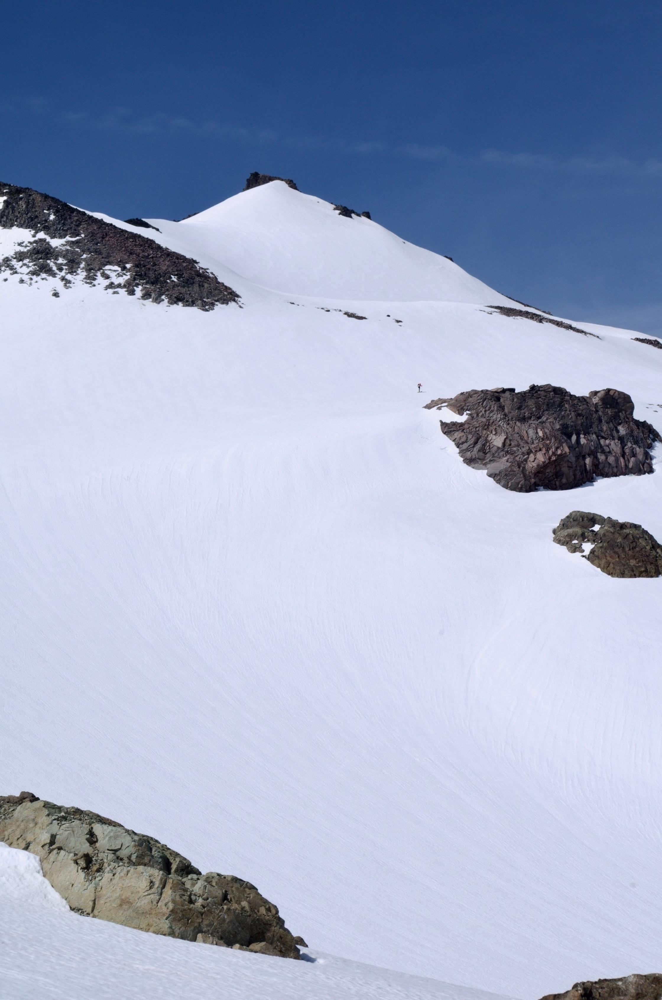
As Phillip described the precarious skinning he'd encountered on the steep face, I reached into my pocket for a half-eaten Bobo bar. It sounded about as good as a can of dog food, but I knew I needed it. I took a bite and tried to chew it into submission.
"What if we tried booting it?" Iris asked Phillip.
He was skeptical.
"It's just super firm up here," he said.
It seemed like Jordan was on the same page as Iris. And I was too. In fact, I'd resolved that after I'd finished my work on the Bobo bar, I'd take a crack at the ridge. But I was chewing on this dense oatmeal bar and it was taking too long and if I said anything it'd just slow me down. I was exhausted, out of breath, in a bit of a daze as they hashed out a plan that I'd silently made for myself already.
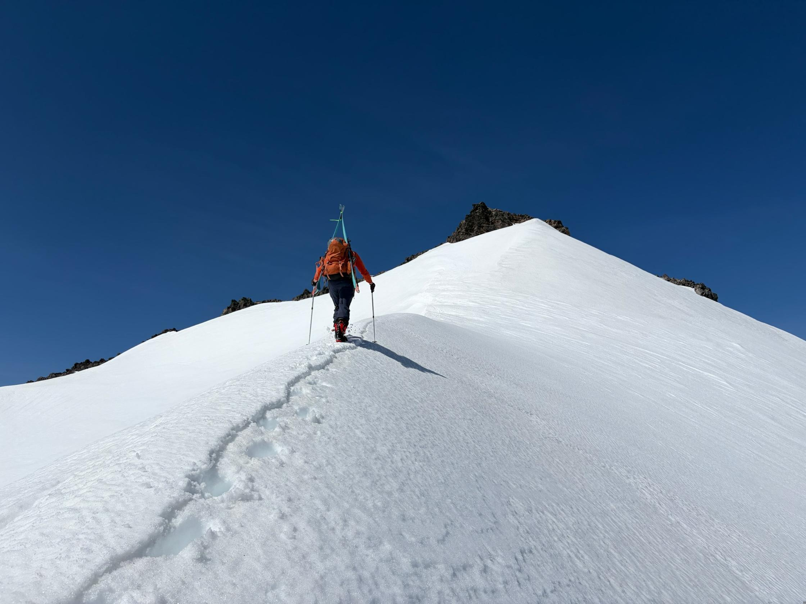
I swallowed the last bit of my bar, waited a second to make sure it was going to stay down, then started climbing. As Iris, Jordan, and Phillip took off their skis and strapped them to their packs, I kicked steps up to the ridge, finding hard but safe snow. On the ridge, I crossed a brief knife edge onto the ramp for the summit.
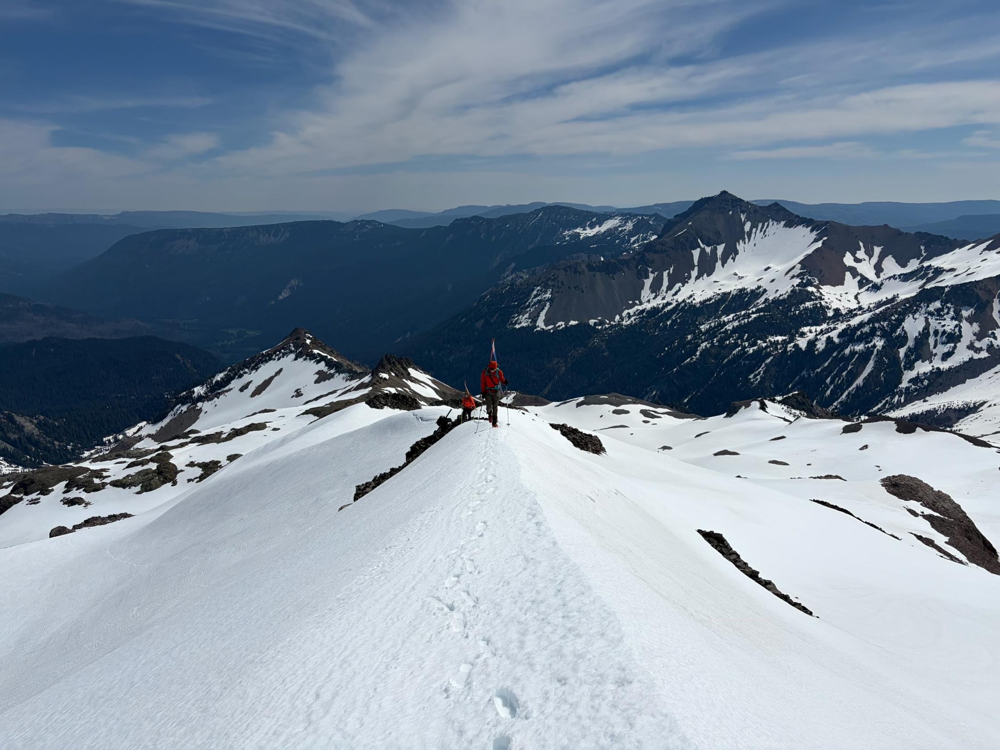
The gang followed. I kept breaking trail, slowing down with each tiresome step. Jordan took over the lead and kicked his way to the rocky summit pinnacle. After a moment of doubt, we'd made it up.
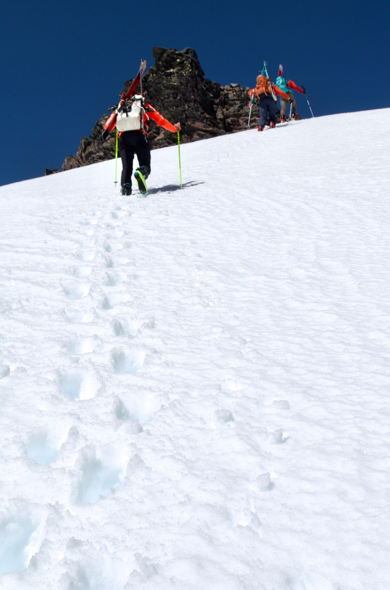
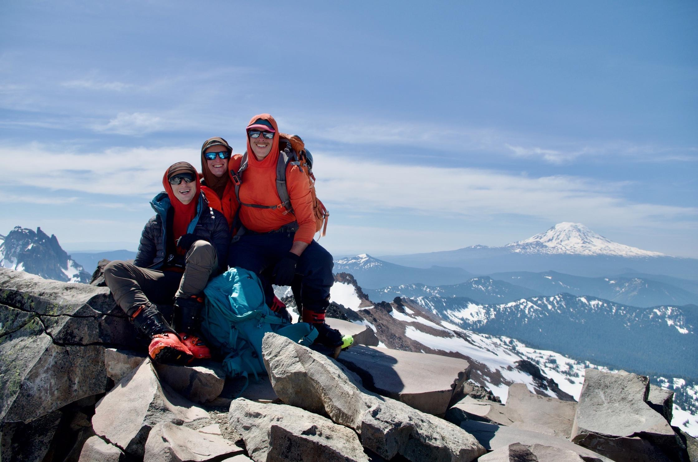
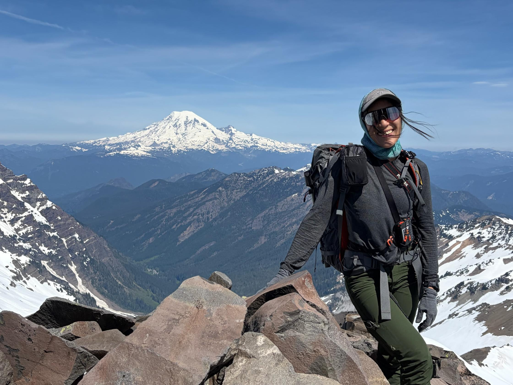
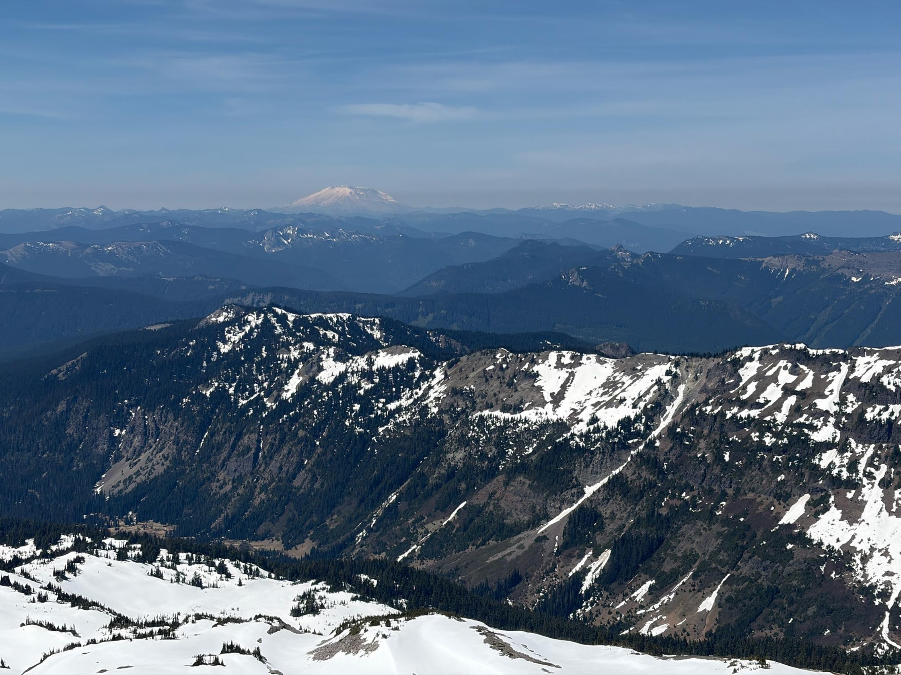
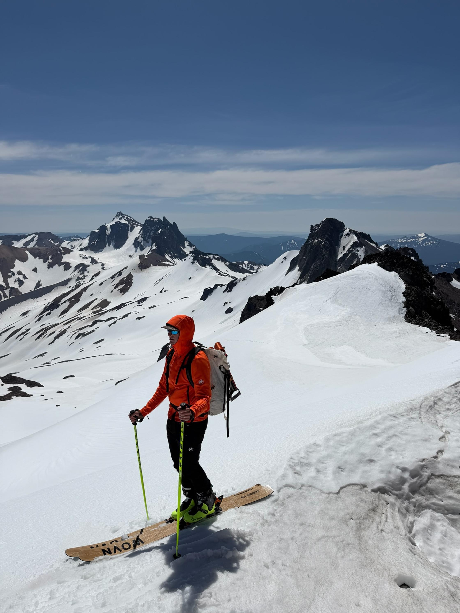
If it's about the journey and not the destination, then what role does the destination play for our journeys?
Back home the following week, I treasured the pearl of my memory of that fifteen minutes when I emerged from the back, deadass tired and quiet, to fill our need for a lead. That little portion of the journey did a lot to balance the cost-benefit scales for me. I think that without the carrot of the summit, though, I wouldn't have taken the opportunity to prove my strength.
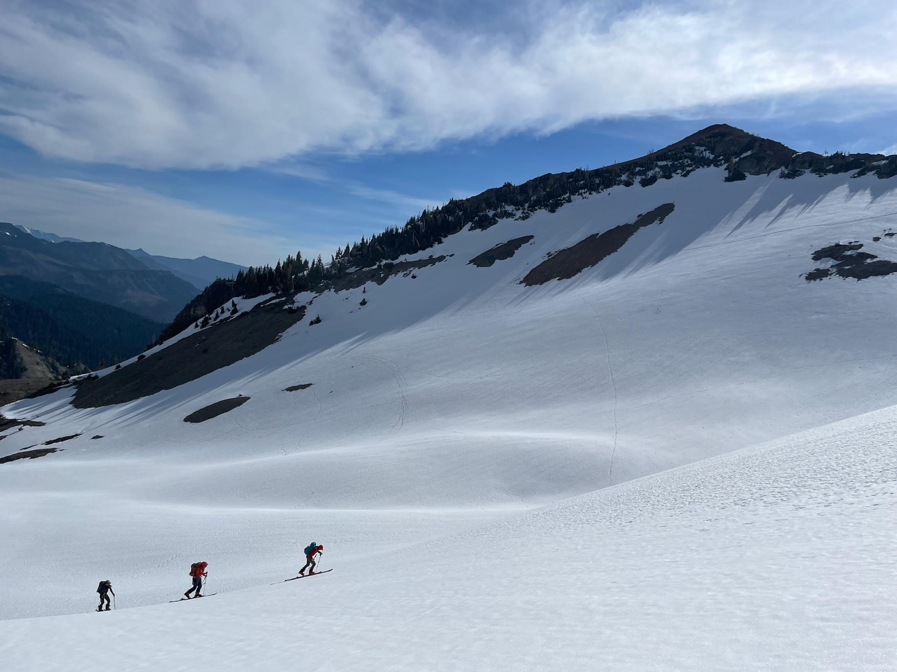
And then there was the return hike to the car, eight more miles with the big packs and skis on our backs, through the burnt and fallen trees. We made jokes about the phrase "Can't stop, won't stop", which often describes some kind of exuberance that drives a person to not stop. Stoke and joy. Emphasis on "won't". But our emphasis was on "can't" because, despite a burning desire to stop hiking, we could not. There was simply no way to get back to the car other than to put in the work.
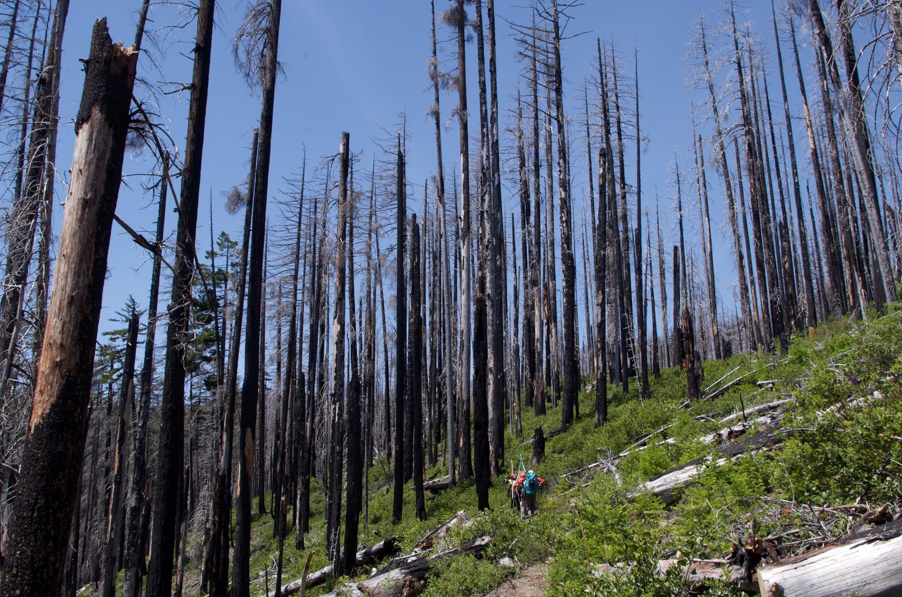
So we put it in. And back home, with muscles sore after a proud output, the skin peeling off burnt noses, eyes bloodshot, shins scabbed, we had our reward: fresh proof that somewhere down there, under the soft layers of life in town, and in spite of our pleasure in comfort, or boredom with the banality of regular life, we were dogs.
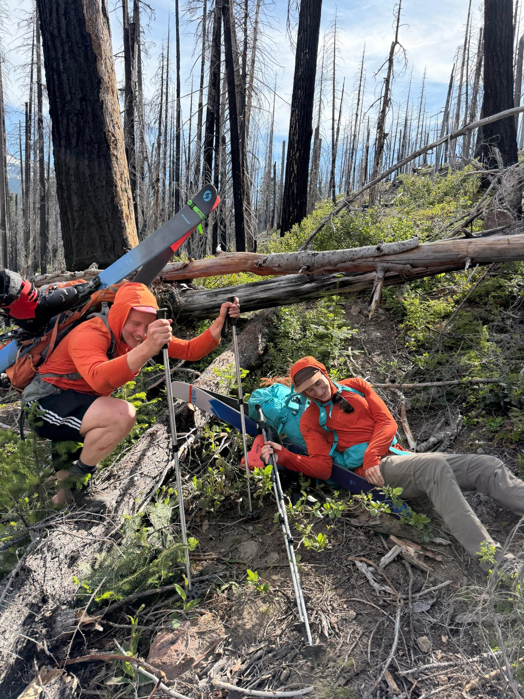